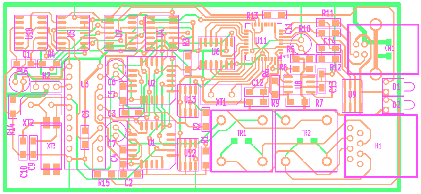

Na tyto stránky budu postupně dávat svoje postřehy a zkušenosti z oblasti Linuxu, hardware, software a programování jednočipových mikroprocesorů. Pokud to někomu poslouží, budu jen rád, jinak to slouží spíš jen jako záloha proto nečekejte žádné speciální efekty, tvorbou webových stránek se opravdu nezabývám a ani zabývat nemíním.
Zatím jen reference :
Zbytek blbin se přestěhoval postupně na Github
Najdete mne (možná) zde.
